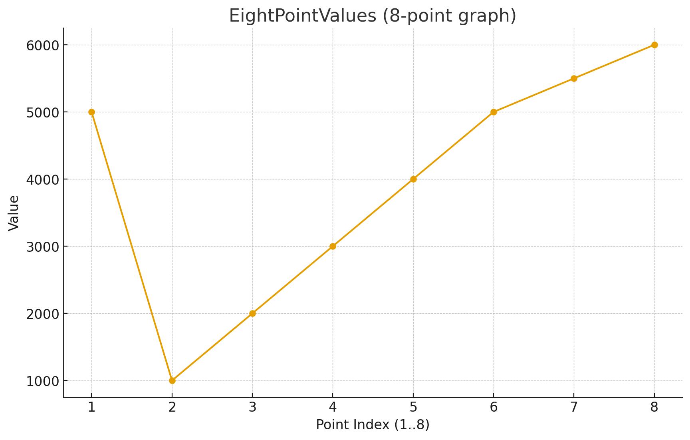

Editor_Format
This page explains the editor’s on-disk and translation-layer data structures. It does not describe the full operational editing workflow. For lifecycle, mutation, persistence, and history behavior, read Editor_Workflows.
The editor stack uses two storage layers:
human-editable JSON working files used by the timeline/editor code
binary and root-database payloads used by trackdata and musdata
The current source of truth for JSON key names is include/core/editor/TimeLine/JSONWrap/jsonWrapper.hpp.
Semantic Model
PDJE editor data is easier to understand if you split it into four semantic layers:
trackdata the root-database unit that represents an authored track. It stores a track title plus serialized mix and note payloads, along with a cached list of referenced music titles.
musdata the root-database unit for a concrete music asset. It stores title, composer, path, BPM information, and firstBeat.
MixArgs timeline data that changes playback or processing behavior over musical time. Current mix categories include FILTER, EQ, DISTORTION, CONTROL, VOL, LOAD, UNLOAD, BPM_CONTROL, ECHO, OSC_FILTER, FLANGER, PHASER, TRANCE, PANNER, BATTLE_DJ, ROLL, COMPRESSOR, and ROBOT.
NoteArgs chart and judgment data. These rows describe note timing, note metadata, and the target railID.
MusicArgs is the bridge between the music metadata side and the BPM timeline side of the editor. It records a BPM value plus a beat-position tuple.
Root Database Payloads
-
struct trackdata
the music meta data’s struct
-
struct musdata
the music meta data’s struct
trackdata stores:
trackTitle
mixBinary
noteBinary
cachedMixList
The root-database column layout for tracks is:
TrackTitle |
MixBinary |
NoteBinary |
CachedMixList |
|---|---|---|---|
Text |
Binary (Cap’n Proto) |
Binary (Cap’n Proto) |
Text (CSV) |
musdata stores:
title
composer
musicPath
bpmBinary
bpm
firstBeat
The root-database column layout for music metadata is:
Title |
Composer |
MusicPath |
Bpm |
BpmBinary |
FirstBeat |
|---|---|---|---|---|---|
Text |
Text |
Text |
Double |
Binary (Cap’n Proto) |
TEXT |
The binary fields are produced by the editor translation layer and then written into the root database. They are not intended to be edited by hand.
firstBeat is important operationally: in the current source it is used as the PCM-frame offset where the first musical beat begins for that audio asset.
Editor Argument Shapes
-
struct MixArgs
Arguments describing a mix entry.
-
struct NoteArgs
Arguments describing a note entry.
-
struct MusicArgs
Arguments describing a music entry.
These three structs describe the semantic payload handled by the editor code before rendering to binary:
MixArgs one mix/event row with type, detail enum, free-form string arguments, and a start/end musical position
NoteArgs one note row with note type/detail, arguments, start/end position, and railID
MusicArgs music timing metadata used by the music BPM editor flow
The older editor reference docs also included compact field tables that are still useful when authoring or reviewing raw data rows.
type |
details |
ID |
first |
second |
third |
beat |
subBeat |
separate |
Ebeat |
EsubBeat |
Eseparate |
|---|---|---|---|---|---|---|---|---|---|---|---|
TYPE_ENUM |
DETAIL_ENUM |
int |
TEXT |
TEXT |
TEXT |
long |
long |
long |
long |
long |
long |
The table below preserves the older author-facing labels because it captures how first, second, and third are interpreted for each mix type. Current source names such as BPM_CONTROL and OSC_FILTER map to the older bpmControl and OCS_Filter spellings shown here.
type |
ID |
details |
first |
second |
third |
Interpolated Value |
|---|---|---|---|---|---|---|
FILTER(0) |
ID |
HIGH(0)/LOW(2) |
ITPL |
8PointValues |
NONE |
filter Frequency |
EQ(1) |
ID |
HIGH(0)/MID(1)/LOW(2) |
ITPL |
8PointValues |
NONE |
eq value |
DISTORTION(2) |
ID |
0 |
ITPL |
8PointValues |
NONE |
drive value |
CONTROL(3) |
ID |
PAUSE(3)/CUE(4) |
approx_loc |
X |
NONE |
NONE |
VOL(4) |
ID |
TRIM(5)/FADER(6) |
ITPL |
8PointValues |
NONE |
volume |
LOAD(5) |
ID |
0 |
title |
composer |
bpm |
NONE |
UNLOAD(6) |
ID |
0 |
X |
X |
NONE |
NONE |
bpmControl(7) |
ID |
timeStretch(7) |
BPM(double) |
NONE |
NONE |
NONE |
ECHO(8) |
ID |
0 |
ITPL |
8PointValues |
BPM, feedback |
Wet amount |
OCS_Filter(9) |
ID |
HIGH(0)/LOW(2) |
ITPL |
8PointValues |
BPM, MiddleFreq, RangeHalfFreq |
Wet amount |
FLANGER(10) |
ID |
0 |
ITPL |
8PointValues |
BPM |
Wet amount |
PHASER(11) |
ID |
0 |
ITPL |
8PointValues |
BPM |
Wet amount |
TRANCE(12) |
ID |
0 |
ITPL |
8PointValues |
BPM, GAIN |
Wet amount |
PANNER(13) |
ID |
0 |
ITPL |
8PointValues |
BPM, GAIN |
Wet amount |
BATTLE_DJ(14) |
ID |
SPIN(8)/PITCH(9)/REV(10) |
SPEED |
NONE |
NONE |
NONE |
BATTLE_DJ(14) |
ID |
SCRATCH(11) |
StartPosition |
SPEED |
NONE |
NONE |
ROLL(15) |
ID |
0 |
ITPL |
8PointValues |
BPM |
Wet amount |
COMPRESSOR(16) |
ID |
0 |
Strength |
Thresh, Knee |
ATT, REL |
NONE |
ROBOT(17) |
ID |
0 |
ITPL |
8PointValues |
ocsFreq |
Wet amount |
Note_Type |
Note_Detail |
first |
second |
third |
beat |
subBeat |
separate |
Ebeat |
EsubBeat |
Eseparate |
RailID |
|---|---|---|---|---|---|---|---|---|---|---|---|
TEXT |
uint16 |
TEXT |
TEXT |
TEXT |
long |
long |
long |
long |
long |
long |
uint64 |
Time And Position Model
The timeline fields follow the beat-grid style layout used across the editor and translators:
beat whole-beat index
subBeat subdivision index inside the current beat
separate subdivision denominator
e_beat, e_subBeat, e_separate end-position tuple for duration-based events
In the current frame calculation helpers, the approximate position is handled as:
beat + (subBeat / separate)
with zero separate values treated as 1 by the translation path when needed.
This means:
a simple point event only needs the start position
sustained notes or automation spans use the e_* fields too
mix automation and long-note style data both reuse the same timing model
Interpolation And EightPointValues
The runtime mix path still contains an explicit EightPointValues parser in MixMachine.hpp. Older docs referred to these comma-separated control values as 8PointValues, and that term is still useful for understanding the editor format.
Operationally:
MixArgs.first often carries an interpolation selector
MixArgs.second often carries the comma-separated control values
the runtime renderer converts those values into time-varying control curves between the start and end positions
The interpolation-related runtime enums in the tree are:
ITPL_LINEAR
ITPL_COSINE
ITPL_CUBIC
ITPL_FLAT
Keyword |
Meaning |
|---|---|
ITPL |
Choose the interpolator type (linear, cosine, cubic, or flat) |
8PointValues |
Eight data points that define the waveform used by the interpolator |
Example control string:
std::string points = "5000,1000,2000,3000,4000,5000,5500,6000";

Read that example as eight control points stretched across the event span from the start beat tuple to the end beat tuple. This is the model older docs used to explain automated filter, EQ, volume, and other FX changes, and it still matches the current runtime parser.
With ITPL_FLAT, older examples used a single value because the control is not meant to interpolate across a curve. That guidance still matches the flat interpolator concept in the current tree.
JSON Working Sets
jsonWrapper.hpp defines the current root object names:
PDJE_MIX
PDJE_NOTE
PDJE_MUSIC_BPM
It also defines the field keys below.
Mix JSON Keys
Key |
Meaning |
|---|---|
type |
integer TypeEnum value |
details |
integer DetailEnum value |
id |
logical target ID |
first |
first free-form argument |
second |
second free-form argument |
third |
third free-form argument |
beat |
start beat |
sub_beat |
start subdivision index |
separate |
start subdivision denominator |
e_beat |
end beat |
e_subBeat |
end subdivision index |
e_separate |
end subdivision denominator |
Note JSON Keys
Note rows reuse the same timeline position keys as mix rows and add:
note_type
note_detail
rail_id
note_type is intentionally open text in the current editor model. One special reserved value is visible in the current translator path:
note type exactly equal to BPM
NoteTranslator treats BPM rows as tempo fragments rather than normal judged notes. This is the current source-backed behavior and is narrower than the older “BPM-prefixed note” phrasing.
Music JSON Keys
Music metadata and BPM editor flows use:
title
composer
path
bpm
first_beat
The MusicArgs helper itself carries bpm, beat, subBeat, and separate for the BPM-timeline side of the editor.
Example JSON Fragments
Mix row:
{
"type": 1,
"details": 0,
"id": 0,
"first": "0",
"second": "0,0,0,0,0,0,0,0",
"third": "",
"beat": 32,
"sub_beat": 0,
"separate": 1,
"e_beat": 40,
"e_subBeat": 0,
"e_separate": 1
}
Note row:
{
"note_type": "TAP",
"note_detail": 0,
"first": "",
"second": "",
"third": "",
"beat": 16,
"sub_beat": 0,
"separate": 1,
"e_beat": 0,
"e_subBeat": 0,
"e_separate": 0,
"rail_id": 1
}
Translation Layer
The current conversion path is:
JSON working files are manipulated through PDJE_JSONHandler.
CapWriter<MixBinaryCapnpData>, CapWriter<NoteBinaryCapnpData>, and CapWriter<MusicBinaryCapnpData> serialize the working representation.
MixTranslator, MusicTranslator, and NoteTranslator deserialize those binaries into runtime structures such as MIX, BPM, and note callbacks.
This split is important:
JSON is the editor-friendly working representation
binary payloads are the runtime-facing data stored in the root DB
For the operational side of the editor, including AddLine(), deleteLine(), history navigation, preview playback, and the distinction between render() and pushToRootDB(), use Editor_Workflows.